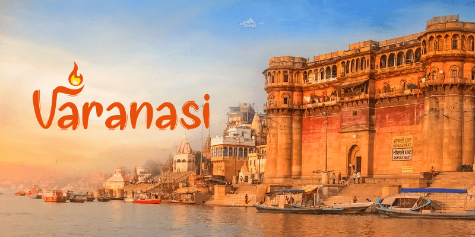

Varanasi
Discover the Spiritual Essence: Varanasi Travel Package
Immerse yourself in the spiritual aura of Varanasi, one of the oldest living cities in the world. Situated on the banks of the sacred Ganges River, Varanasi is a melting pot of spirituality, culture, and tradition. From mesmerizing Ganga Aarti to ancient temples, this city offers a unique and soul-stirring experience.
Package Highlights
Duration: 2 Days / 1 Night
Best Time to Visit: October to March
Ideal For: Spiritual Seekers, Culture Enthusiasts, Solo Travelers
Itinerary Overview
Day 1: Arrival & Spiritual Exploration
Welcome to Varanasi: Arrive at Lal Bahadur Shastri International Airport or Varanasi Railway Station. Transfer to your hotel.
Dashashwamedh Ghat: Witness the grand Ganga Aarti in the evening, a spiritual spectacle of lights, chants, and rituals.
Evening Walk: Stroll through the narrow lanes of the old city and explore local markets for silk sarees, handicrafts, and spiritual souvenirs.
Overnight Stay: 3-star or heritage hotel in Varanasi.
Day 2: Temples, Ghats & Departure
Morning Boat Ride: Experience the serene beauty of the Ganges at sunrise with a boat ride.
Pass by iconic ghats like Manikarnika and Assi.
Kashi Vishwanath Temple: Visit one of the most sacred temples dedicated to Lord Shiva.
Sarnath: Explore the Buddhist pilgrimage site where Lord Buddha delivered his first sermon.
Visit the Dhamek Stupa, Sarnath Museum, and Deer Park.
Departure: Transfer to the airport or railway station for your onward journey.
Inclusions
Accommodation in a 3-star or heritage hotel.
Daily breakfast.
Private AC vehicle for sightseeing and transfers.
Boat ride on the Ganges.
Guided tours with a local expert.
Exclusions
Airfare/Train tickets.
Personal expenses and tips.
Entrance fees to monuments and attractions (if applicable).